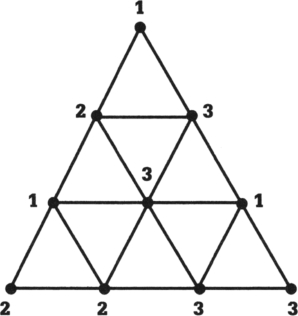

40 分摊房租
数学概念：公平分配、组合学
如果你有过室友的话，一定熟悉三人或更多人分摊房租的难题。如何公平地决定谁该分摊多少房租，这个问题远比看上去要复杂，因为每个房间的情况都不同，比如，有的房间采光好，有的房间空间大，每个人也都看重房间的不同特征。那么，究竟该如何分配房间和房租，才能让每个人都满意，又不至于让人忌妒其他室友呢？
这些问题属于公平分配的范畴。公平分配问题涉及多个领域，包括数学、经济学、法学和政治学，主要研究如何公平地分配物品，让每个人得到公平的一份。同时，这样的分配也应该做到，每个人不愿意和别人交换自己得到的那份。公平分配常可以在离婚、拍卖甚至战争中见到。
1999年，哈维马德学院的数学教授弗朗西斯·苏发表了一篇论文，解释了如何利用组合学（参见第26章）的一个定理———斯波纳引理来解决公平分配的问题。最初，这一引理解释了三角形的一个性质。取一个三角形，将它的内部分割成小的三角形，分割成几个都可以，只要确保它们彼此相接，中间没有空隙。接着，将大三角形的顶点分别标记为1，2，3，这样，每个顶点就有了一个不同的编号。此时，你将注意到，有些小三角形的顶点至少与三角形的一条边相接，给这些点标上不同的数字：在大三角形的12边上的点，可以标记为1或2（具体标哪个数字由你决定）；在23边上的点，可以标记为2或3；在31边上的点，可以标记为3或1；至于大三角形内部的点，可以标记为1，2或3，由你决定。所谓的斯波纳引理是说，最后至少有一个小三角形的三个顶点分别被标为1，2，3。这样的三角形可能不只有一个，但总数一定是奇数，而不会是偶数。

用斯波纳引理来处理房租的问题时，可以用代表每个房客姓名的首字母来代替数字，每个大三角形或小三角形都代表不同的分摊方式。根据这一引理，一定存在一种分摊方式，会让所有房客都满意，而不会想要其他人的房间或房租。换句话说，由于大三角形中一定有一个小三角形，它的三个顶点分别被标为1，2，3，所以至少也有一种让每个人都满意的分摊方式。
斯波纳引理看似一项抽象的、与日常生活毫无关系的数学发现，但其实能帮助人们有效地解决问题。
“二战”后的公平分配
公平分配的一个例子出现在“二战”后，当时，同盟国需要决定如何解决柏林问题，最后，他们决定将柏林一分为四，由同盟国的三个部分（分别由美国、英国和法国管辖）组成了西柏林，苏联管辖的部分则成为东柏林。